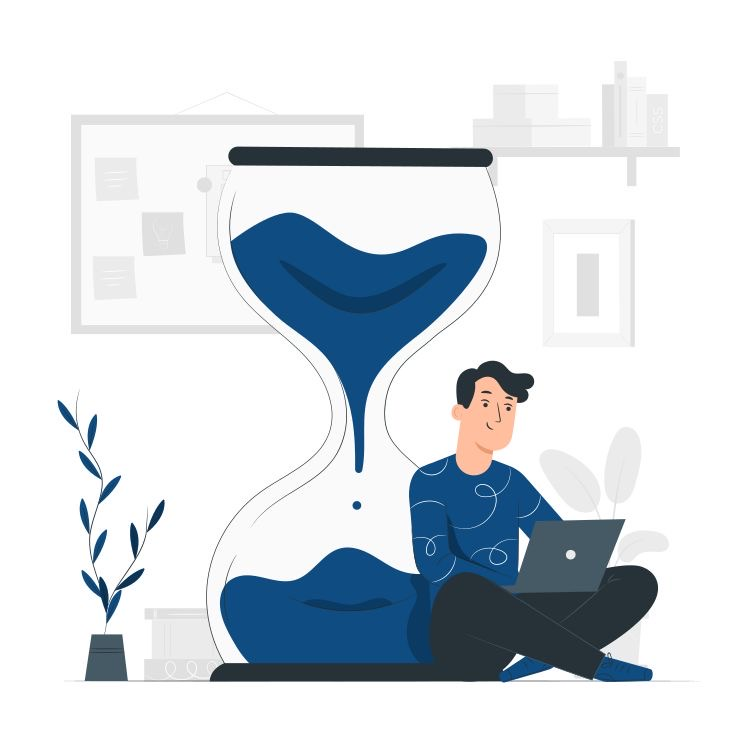

الكاتب: أحمد مصطفى | التاريخ: 10 ديسمبر 2025
الوقت هو أغلى حاجة عند الإنسان، لكن أغلبنا بيضيّعه من غير ما يحس. تنظيم الوقت مش بس إنك تكتب جدول، لكنه إنك تتعلم تختار الأولويات وتعرف تستخدم كل دقيقة صح.
ابدأ يومك بسؤال بسيط: "إيه أهم حاجة لازم أعملها النهارده؟" اختار 3 مهام رئيسية وابدأ بيهم، والباقي مش لازم تعمله كله. التركيز على المهم هو سر الإنجاز الحقيقي.
القائمة اليومية بتخليك شايف يومك بوضوح. اكتب المهام بترتيب، وحط علامة ✔️ على كل مهمة تخلصها. الطريقة دي بتديك إحساس بالإنجاز وبتقلل التشتت.
الموبايل، الإشعارات، والمواقع الكتير بتضيع وقتك من غير ما تحس. جرب تخصص وقت محدد تراجع فيه الرسائل، وسيب باقي اليوم للشغل أو الدراسة. كل دقيقة بتوفرها هتفرق معاك آخر اليوم.
تنظيم الوقت مش حاجة بتتعلمها في يوم وليلة، لكن مع الاستمرار هتلاحظ إنك بقيت تخلص أكتر، وتنام مرتاح وأنت راضي عن يومك. السر في البساطة والالتزام، مش في التعقيد.